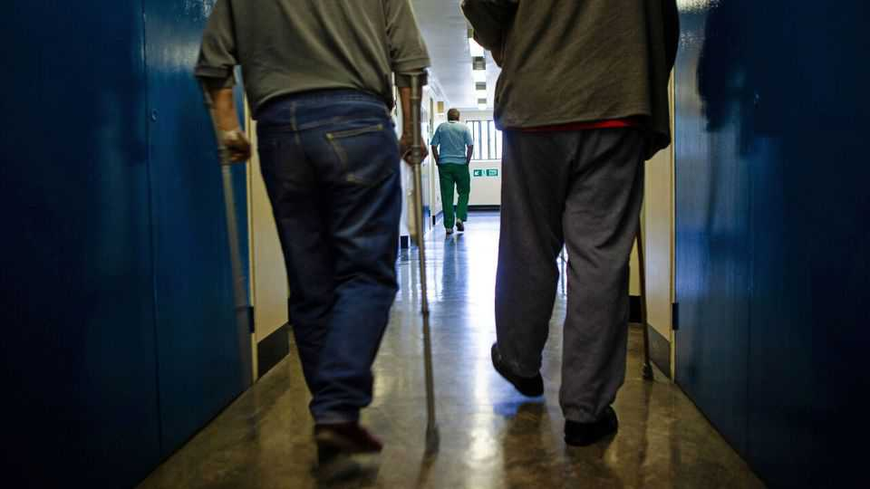
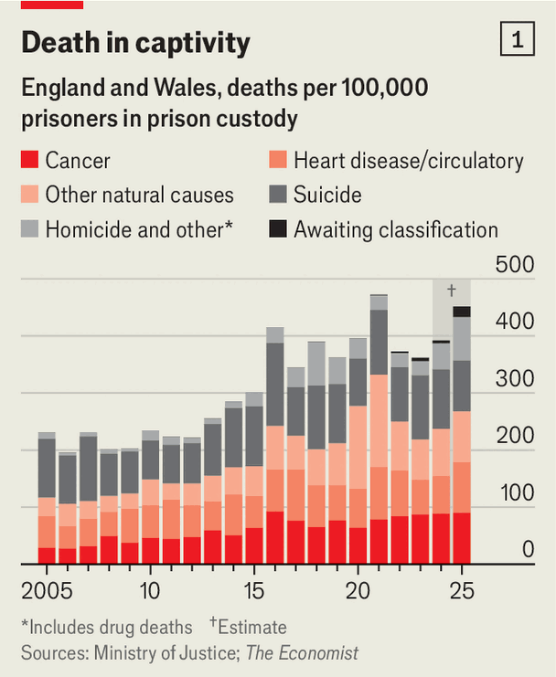
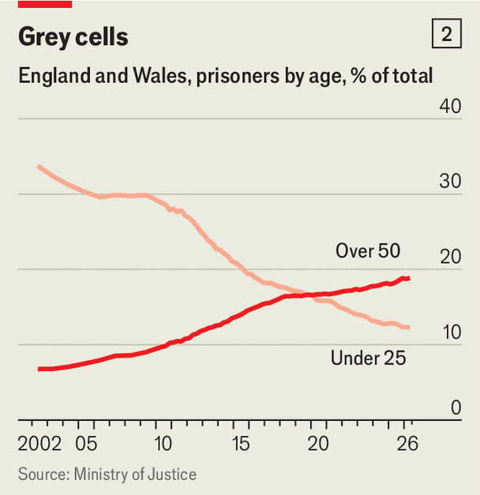

What is killing Britain’s prisoners?
Less violence and drugs than heart disease and cancer

Nov 12th 2026
“Feculent and noxious”, said John Howard of England’s prisons in 1777. Convicts, the reformer wrote, were “pining under diseases” and “expiring on the floors”. Conditions have improved since. And yet in 2017 Annabella, a 45-year-old diabetic, died after having spent 21 hours lying unresponsive on her cell floor.
There has scarcely been a worse time to be a British prisoner since detailed records began in the early 2000s. Rates of violence, self-harm and drug use are at or near record highs. With prisons running at 98% capacity, it is not unusual for prisoners to spend over 22 hours a day locked in a cell no bigger than a garden shed.

More than ever, they are dying there. Between 1992 and 2012 prisons in England and Wales recorded an average of 2.2 deaths a year for every 1,000 inmates. Last year there were 4.5 per 1,000—more than in any other outside the covid-19 pandemic.
Why? Headlines about violence, or synthetic opioids smuggled in on drones, suggest an epidemic of dramatic deaths. But our analysis of over 5,000 fatal-incident reports, from the Prisons and Probation Ombudsman, suggests a more prosaic reality. Britain’s prisoners are getting older and frailer. Though drug deaths have crept up, most of the rise in prisoners’ mortality rate comes from “natural deaths”, meaning those caused by routine ailments like heart disease and cancer (see chart 1).
Sad, quiet deaths in jail are not new. Compared with other people, prisoners are sicker and more likely to come from deprived areas, meaning they are more likely to die a natural death at a younger age. But last year there were 2.6 such deaths for every 1,000 prisoners, more than double the average rate between 2000 and 2010.
The simplest explanation for the rise in natural deaths is that the prison population has aged rapidly. Since 2014 Britain’s median age has held steady at 40 years. The median age in the prisons of England and Wales, in contrast, has risen from 32 to 37 over the past decade. Since the early 2000s the number of prisoners aged 50 or older has more than doubled. For the first time they now outnumber prisoners under the age of 25 (see chart 2 ).
That is partly because prison sentences have lengthened. Last year a government review found the number of prisoners serving life sentences had more than doubled since 1993. The average non-life custodial sentence had risen from 16 months to 22.

Old sex offenders, meanwhile, have increasingly been handed long sentences. British police take such crimes far more seriously than they used to, and have launched investigations into historical cases. Among men in prison over 50, 43% are there for sex offences committed decades ago. For those over 80, it is almost 100%.
Ageing populations have more medical problems. James Hard, a clinical director in the NHS, says “the level and complexity of need” among prisoners is higher than at any time in his 20-year career. Their being in prison does not help. Poor diets, limited time outside cells and a lack of fresh air in them mean that health problems appear roughly ten years earlier in prisoners than among the general public. And the older ones are less able to withstand such dismal conditions than the youngsters who used to outnumber them.
For those who fall ill, prison is a difficult place to get good medical treatment. Adrian Usher, the Prisons and Probations Ombudsman, says that the prison service is “really good at dealing with trauma”, but that “chronic conditions are much more challenging.” There is a tension between the need for security and that for compassionate care. Prisoners making vague health complaints are often met by prison staff with reason to be suspicious.
Those that are believed may be able to visit an on-site doctor, but diagnosis and management of chronic conditions need specialist appointments. That means trips to hospital, which require spare prison officers to act as escorts. A report from the government’s chief medical officer last year found that, with staff in short supply, prisons are forced to ration such escorts. As rates of violence and medical emergencies increase, Dr Hard says routine appointments often have to be rescheduled so staff can tackle crises. Overcrowded prisons therefore have more sick inmates than ever, and less capacity to treat them.
Mr Usher says it is hard to gauge whether someone died “while they were in prison or because they were in prison”. But prisoners receive 24% fewer hospital appointments than the general population (after adjusting for age and sex). They also miss more than 40% of them—almost double the rate outside prison. A study earlier this year found that prisoners in England experience between 41 and 67 times as much avoidable medical harm as other people. Jessica Pandian of INQUEST, a charity that investigates deaths in custody, says that “natural deaths” is a misnomer. “People are dying from wholly preventable conditions.”
Mark Juniper, who led a recent review of health care in prisons, says they could be used as “an opportunity to help a population that is difficult to access outside prison”. Officially, the government strives to achieve “equivalence of care” for those in prison and outside. But prisoners need more resources per person to achieve the same outcomes. In a country where 50% of people tell pollsters they would support capital punishment, and with the NHS looking threadbare, throwing cash at criminals is not likely to win votes.
It is normal for society to withhold rights from prisoners, but in theory Britain’s inmates keep their right to health care. In practice, they often do not. “I was pretty shocked by the reality of what happens inside,” says Dr Juniper. “We put people in prison as punishment. We don’t sentence them to death.” ■